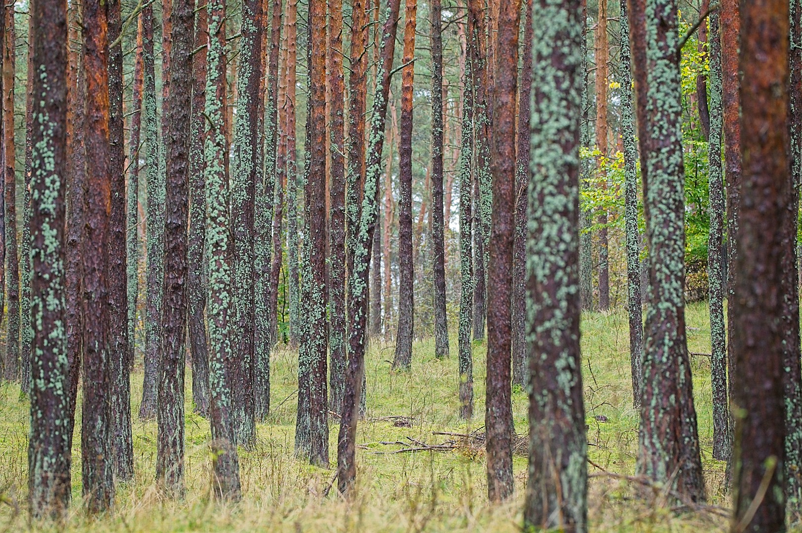

michał macura – notatki z terenu

Nazywam się Michał, fotografuję głównie polską przyrodę. Od osiedlowych trawników, ogrodów i parków kończąc na miejscach gdzie wciąż jeszcze można poczuć oddech dzikości. Fotografia pozwala mi lepiej poznawać świat, dostrzec wzory i rytmy których wcześniej nie widziałem. Interesują mnie ślady, stare pnie pełne życia i miejsca, w których pozornie nic się nie wydarza.
Znajdziesz tutaj galerie zdjęć oraz notatki powstające podczas wędrówek po lasach, dolinach rzecznych i innych miejscach, do których regularnie wracam z aparatem.